Press kitMoonrise Mini Golf
Free VR mini golf with friends for Meta Quest. Everything on this page is free to use in coverage, videos and streams. For clips, interviews or anything else, write to moonrisestudiovr@gmail.com.
Fact sheetAt a glance
- Developer and publisher
- Moonrise Studios
- Released
- September 30, 2026, on the Meta Horizon Store
- Platforms
- Meta Quest 2, Quest 3 and Quest 3S
- Price
- Free to play: four 18-hole courses (72 holes). Two add-on courses: Glowtown ($3.99) and Dinosaur Valley (new October 20; free to play through November 1, and every round finished by then keeps it; $3.99 after).
- Players
- 1 to 4: solo, or private online games with friends (join code or Meta invite), with voice chat
- Rating
- Everyone
- Language
- English
- Store
- Meta Horizon Store
- Trailer
- YouTube
- Contact
- moonrisestudiovr@gmail.com
About the gameDescription
Start at the Moonrise Clubhouse, a lantern-lit terrace over a twilight sea, and step through a portal to one of six 18-hole courses. Four are free to play; Glowtown and Dinosaur Valley are add-ons.
- Lantern Cove: golden hour by the sea. Bank off a giant conch, putt along stilt-village boardwalks and finish under the lighthouse.
- Neon Shroom Forest: a glowing night. Roll through root tunnels, down a log flume and up the towering Mother Shroom.
- Pumpkin Hollow: a cozy Halloween night. Trick-or-treat at the five doors of Hollow Lane, putt into a witch's cauldron and finish inside the Great Jack as lantern drones light the sky.
- Atomic Skyways: the sunny city of tomorrow. Putt through the Sparkle-Jet Car Wash and into the Stardome, then watch the Starliner lift off on 18.
- Glowtown (add-on): a neon showbiz city at night. Work the flippers on a sky-arcade pinball table and drop off the top of the tower.
- Dinosaur Valley (add-on, new October 20): a green river valley on a prehistoric morning, full of friendly dinosaurs. Thread the sleepy iguanodon, ride the geysers and the mud luge, and finish on the volcano as it erupts. Free to play through November 1, and every round finished by then keeps it.
A new daily challenge waits in the clubhouse every day, from Closest to the Pin to Ace Hunt: three tries, your best counts, and streaks for the days in a row. The ball is simulated 360 times a second, the putter fits your grip, and scores live on a wrist watch. Teleport or walk, play seated or standing, left- or right-handed.
Free to useLogos and screenshots
Every screenshot is 2560x1440, taken in the game engine from the real game. Click one for the full-size file.

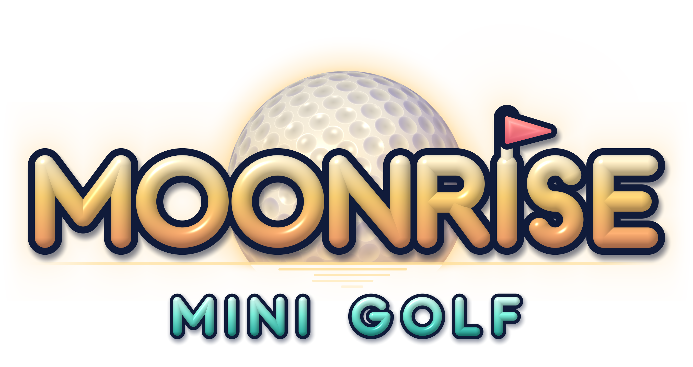

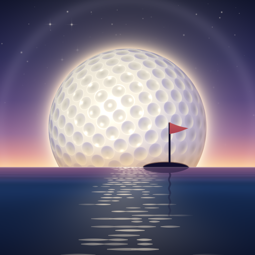


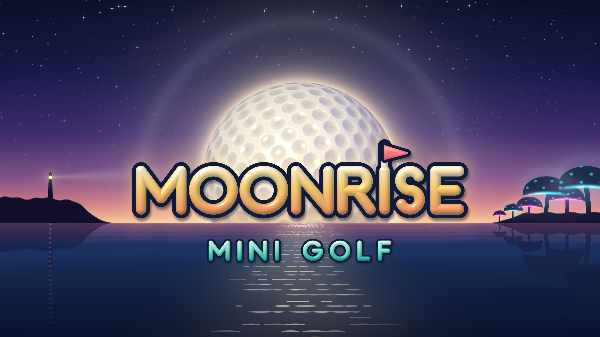

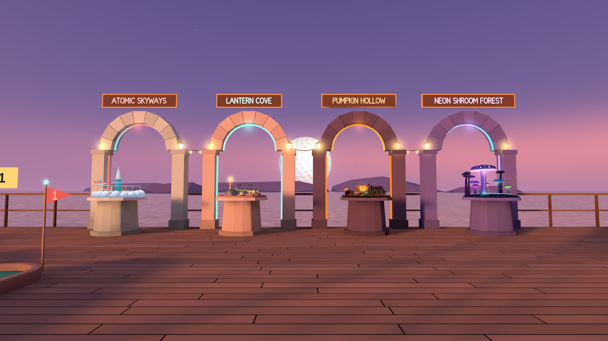

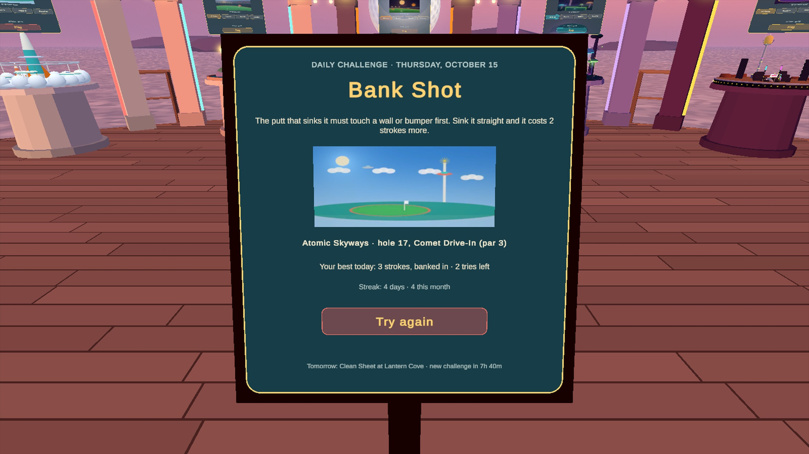

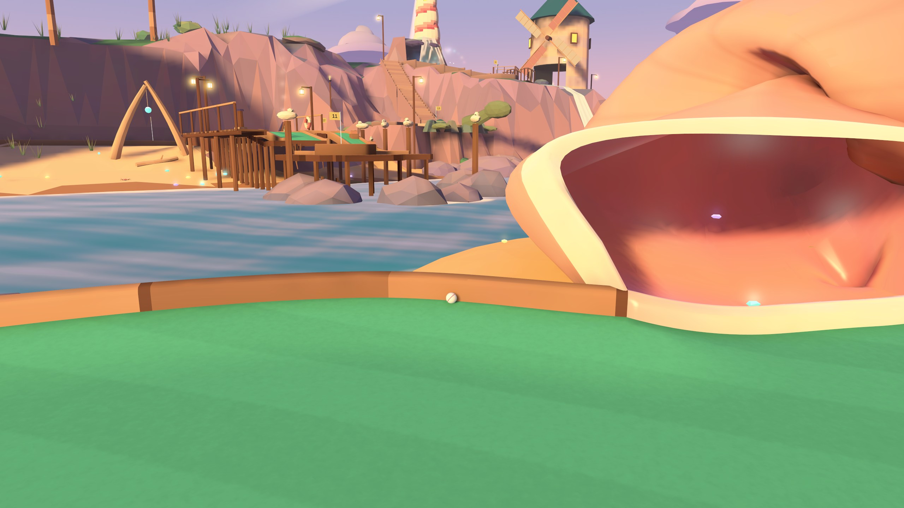

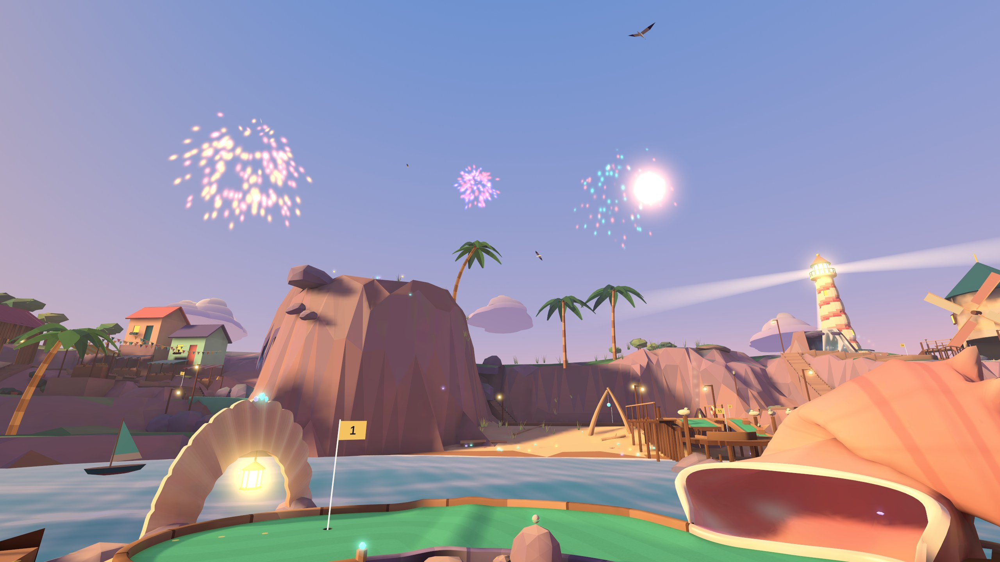

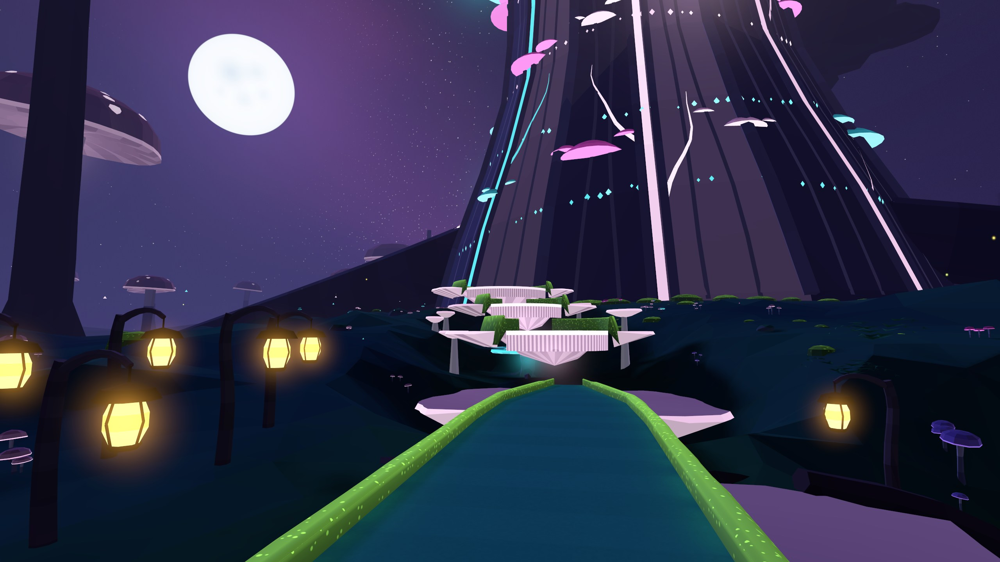

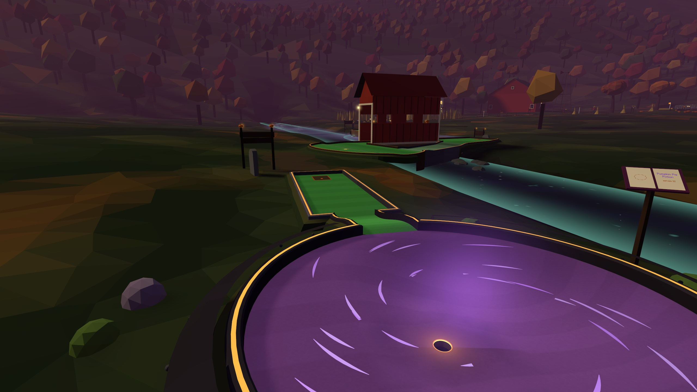

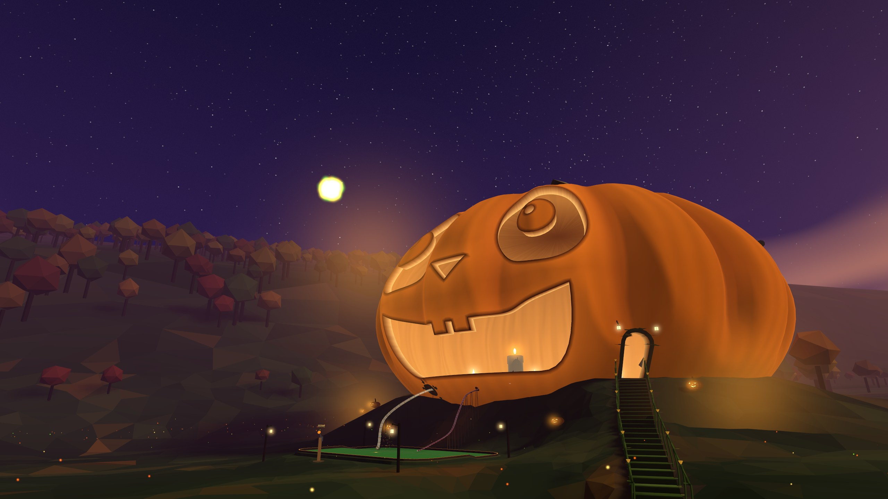

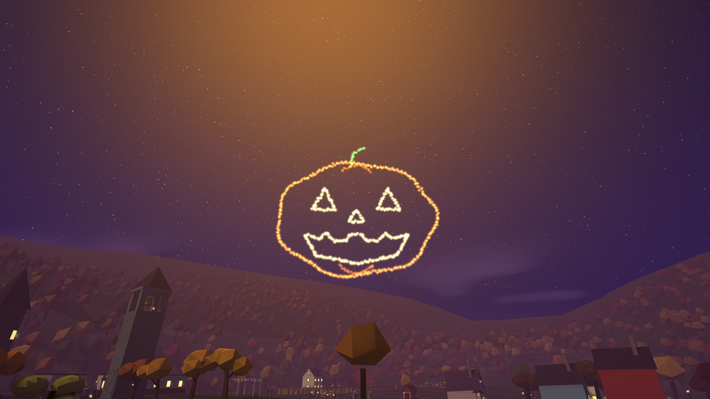

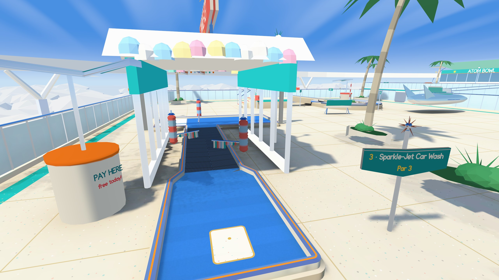

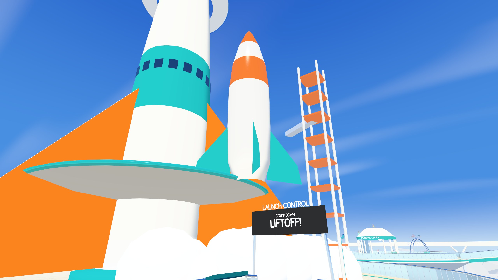

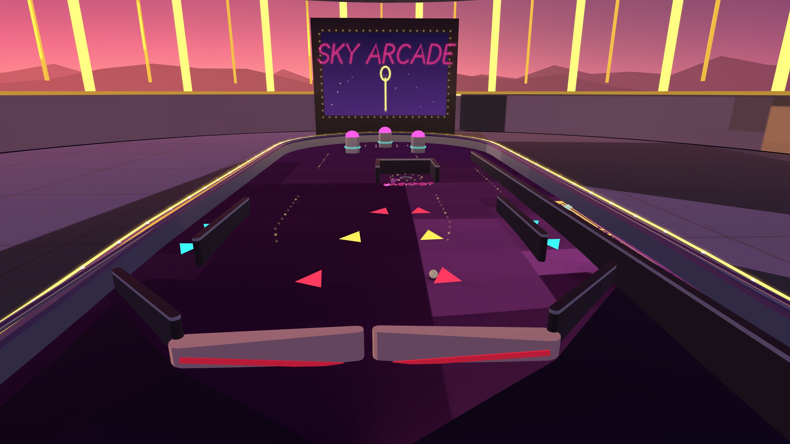

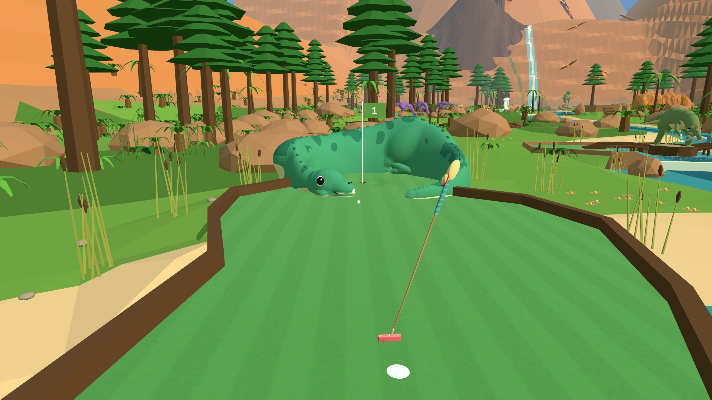

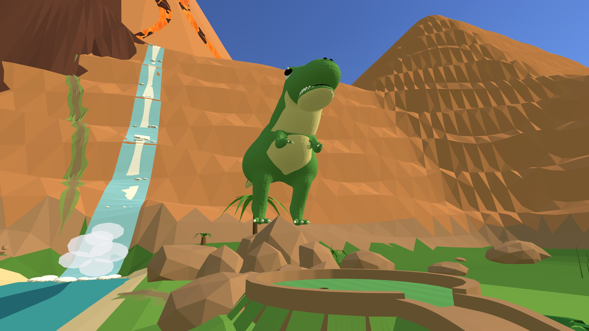

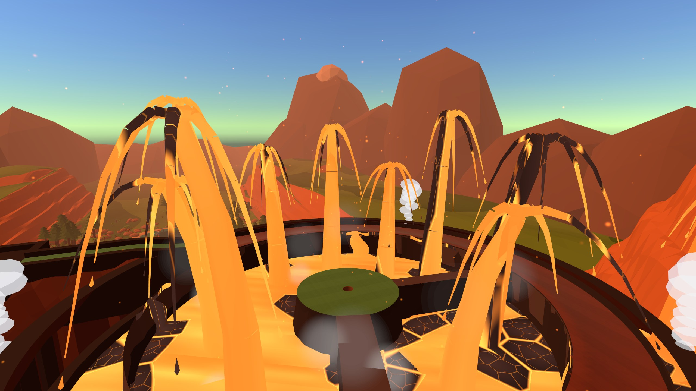
CoverageIn the press
- Moonrise Mini Golf's New Course Is Free to Keep, Duuro Plays, October 22, 2026